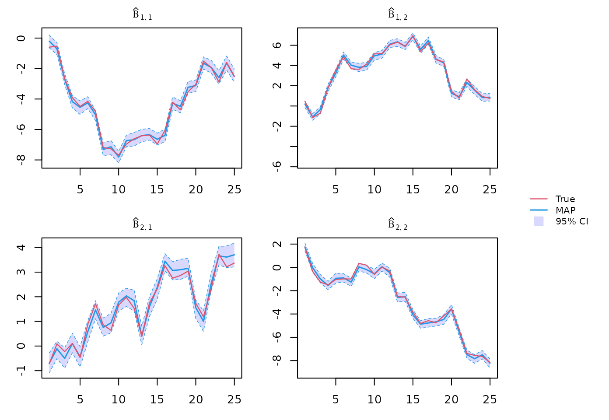
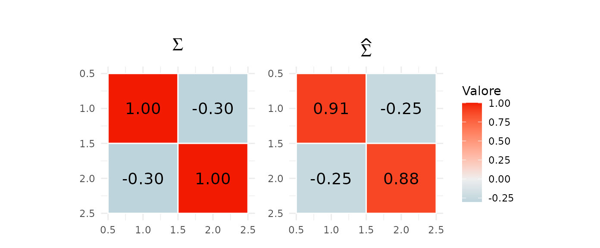
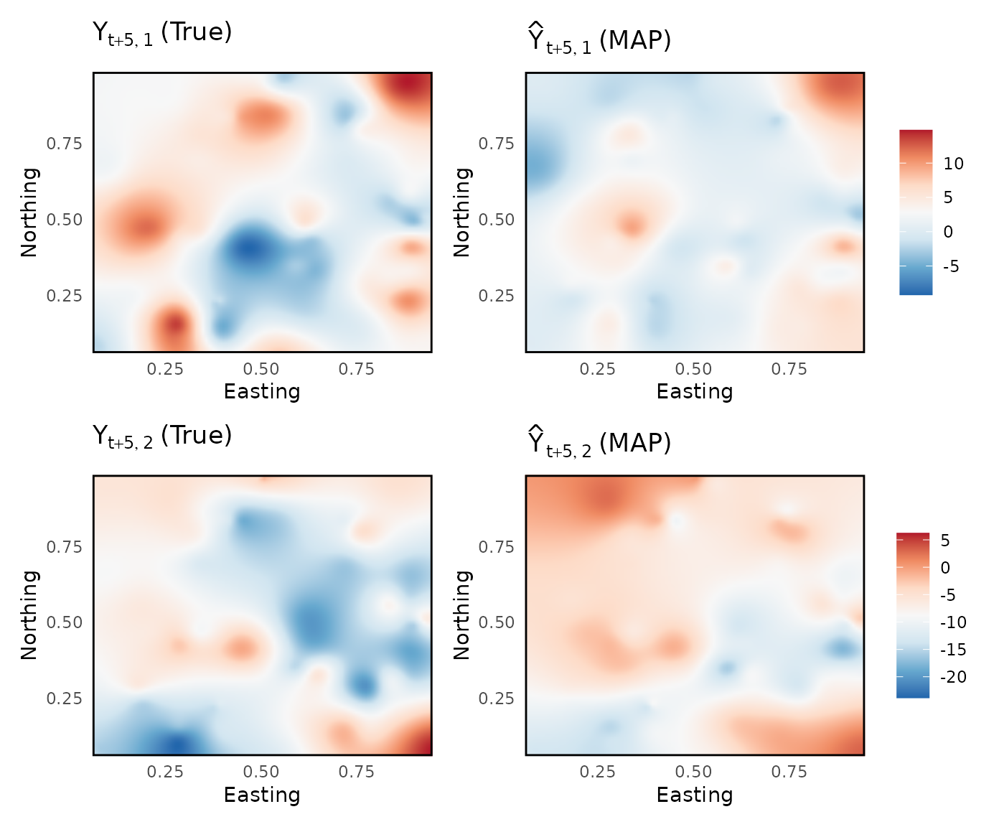

Dynamic Bayesian Predictive Stacking for Spatiotemporal Analysis - Tutotial
tutorial.RmdWe provide a brief tutorial of the spFFBS package. Here
we shows the implementation of the Dynamic Bayesian Predictive Stacking
on synthetically generated data. For any further details please refer to
(Presicce and Banerjee 2026). More
examples, are available in documentation, and functions help.
Data generation
We generate data from the model detailed in Equation (1) (Presicce and Banerjee 2026), over a unit square.
# Dimensions
tmax <- 25
tnew <- 5
n <- 150
q <- 2
p <- 2
u <- 50
# Parameters
Sigma <- matrix(c(1, -0.3, -0.3, 1), q, q)
phi <- 8
alfa <- 0.8
a <- ((1/alfa)-1)
V <- a*diag((n+u))
set.seed(1)
# Generate constant sinthetic data structure
coords <- matrix(runif((n+u) * 2), ncol = 2)
D <- spBPS:::arma_dist(coords)
K <- exp(-phi * D)
W <- rbind( cbind(diag(p), matrix(0, p, (n+u))), cbind(matrix(0, (n+u), p), K) )
# Prior information and initial state
m0 <- matrix(0, (n+u)+p, q)
C0 <- rbind( cbind(diag(0.005, p), matrix(0, p, (n+u))), cbind(matrix(0, (n+u), p), K) )
theta0 <- mniw::rMNorm(n = 1, Lambda = m0, SigmaR = C0, SigmaC = Sigma)
# Generate dynamic sinthetic data structure
G <- array(0, c((n+u)+p, (n+u)+p, tmax+tnew))
theta <- array(0, c((n+u)+p, q, tmax+tnew))
X <- array(0, c((n+u), p, tmax+tnew))
P <- array(0, c((n+u), (n+u)+p, tmax+tnew))
Y <- array(0, c((n+u), q, tmax+tnew))
set.seed(1)
for (t in 1:(tmax+tnew)) {
if (t >= 2) {
G[,,t] <- diag(p+n+u)
theta[,,t] <- G[,,t] %*% theta[,,t-1] + mniw::rMNorm(n = 1, Lambda = m0, SigmaR = W, SigmaC = Sigma)
X[,,t] <- matrix(runif((n+u)*p), (n+u), p)
P[,,t] <- cbind(X[,,t], diag((n+u)))
Y[,,t] <- P[,,t] %*% theta[,,t] + mniw::rMNorm(n = 1, Lambda = matrix(0, (n+u), q), SigmaR = V, SigmaC = Sigma)
}
else {
G[,,t] <- diag(p+n+u)
theta[,,t] <- G[,,t] %*% theta0 + mniw::rMNorm(n = 1, Lambda = m0, SigmaR = W, SigmaC = Sigma)
X[,,t] <- matrix(runif((n+u)*p), (n+u), p)
P[,,t] <- cbind(X[,,t], diag((n+u)))
Y[,,t] <- P[,,t] %*% theta[,,t] + mniw::rMNorm(n = 1, Lambda = matrix(0, (n+u), q), SigmaR = V, SigmaC = Sigma)
}
}
# Unobserved data
Yfuture <- Y[(1:n),,(tmax+1):(tmax+tnew)]
Ytilde <- Y[-(1:n),,]
thetatilde <- theta[-(1:(n+p)),,]
Xtilde <- X[-(1:n),,]
crdtilde <- coords[-(1:n),]
Dtilde <- as.matrix(dist(crdtilde))
Ktilde <- exp(-phi*Dtilde)
# Observed data
Y <- Y[(1:n),,1:tmax]
X <- X[(1:n),,]
P <- P[(1:n),1:(n+p),]
G <- G[1:(n+p), 1:(n+p),]
crd <- coords[1:n,]
D <- as.matrix(dist(crd))
K <- exp(-D)
W <- rbind( cbind(diag(p), matrix(0, p, n)), cbind(matrix(0, n, p), K) )
V <- a*diag((n))Setting priors and hyperparameters
# Priors
m0 <- matrix(0, n+p, q)
C0 <- rbind( cbind(diag(0.005, p), matrix(0, p, n)), cbind(matrix(0, n, p), K) )
nu0 <- 3
Psi0 <- diag(q)
prior <- list("m" = m0, "C" = C0, "nu" = nu0, "Psi" = Psi0)
# hyperparameters values
alfa_seq <- c(0.7, 0.8, 0.9)
phi_seq <- c(6, 8, 9)
par_grid <- list(tau = alfa_seq, phi = phi_seq)Dynamic BPS fit
Posterior inference, forecast and spatial interpolation call (using 1 computing core):
Beta posterior inference
theta_post <- sapply(1:tmax, function(t){ out$BS[[t]] }, simplify = "array")
beta_post <- theta_post[1:p, 1:q,,]
Sigma posterior inference
# Global weights
Wglobal <- out$Wglobal
J <- nrow(Wglobal)
L <- 200
# Posterior sampling
set.seed(1)
indL <- sample(1:J, L, Wglobal, rep = T)
Sigma_post <- sapply(1:L, function(l) {
mniw::riwish(1, nu = out$FF[[tmax]]$filtered_results[[indL[l]]]$nu,
Psi = out$FF[[tmax]]$filtered_results[[indL[l]]]$Psi) },
simplify = "array")
Sigma_map <- apply(Sigma_post, c(1,2), median)
Unobserved spacetime-points interpolation
Spatial interpolation for unobserved locations at future time points, here time point 30
Y_pred <- sapply(1:L, function(l){out$spatial[[1]][[l]][1:u,]}, simplify = "array")
Presicce, Luca, and Sudipto Banerjee. 2026. “Adaptive Markovian Spatiotemporal Transfer Learning in
Multivariate Bayesian Modeling.” arXiv Preprint,
arXiv:2602.08544. https://doi.org/10.48550/arXiv.2602.08544.